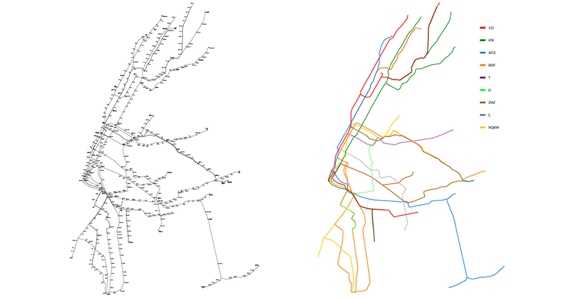
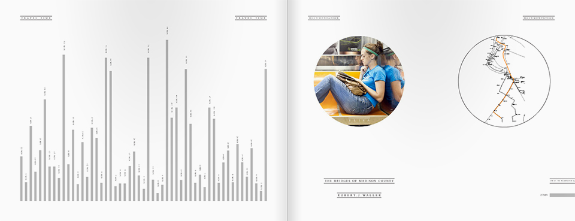
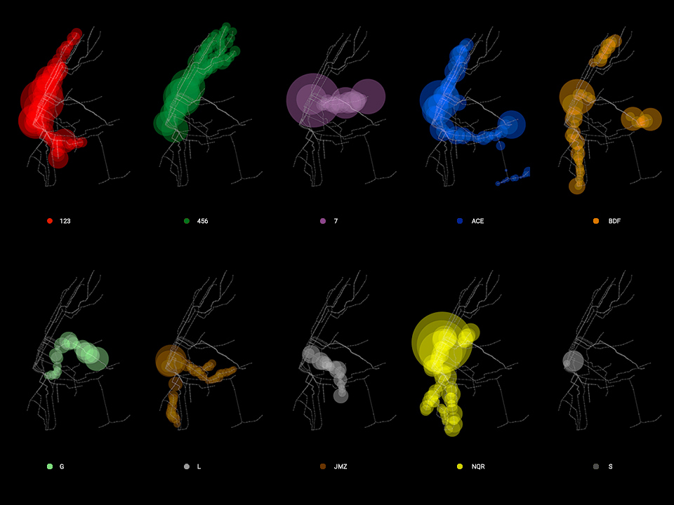
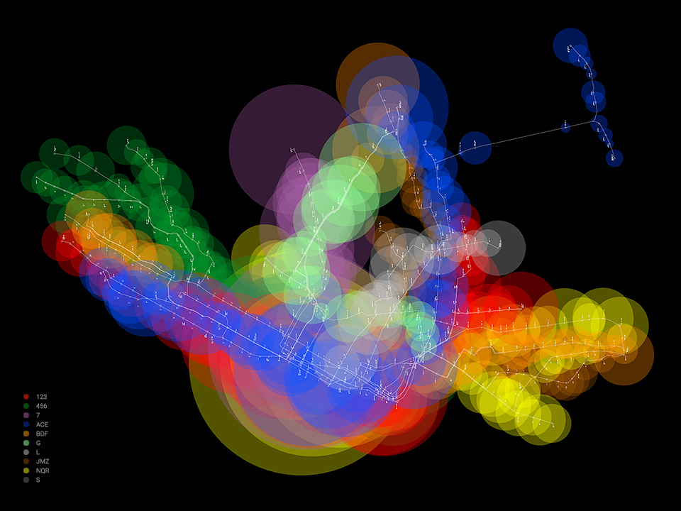

New York City Sub Rider-Readers
Design Challenge
As part of MTA NYC's Poetry in Motion initiative, this project aimed at enhancing subway rider's commuting experience and trigger more communication through an interactive design of ridership data. MTA was looking for a fresh take on their data:
1. A new perspective on NYC subway riders
2. Something goes beyond cold data analytics and visualization
3. Make data resonates with subway riders
4. An interactive cultivates public's interests in data

A fresh perspective.
Rider. Also a reader.
Rider. Also a reader.
A key observation of NYC subway riders is: there are people reading books, news, tweets everythere and all the time along the subway. Riding takes time, and reading kills time. Taking this perspective, the design was then focused on riding data and reading behaviors in the subway system.
Readership.
A subway rider's reading data.
A subway rider's reading data.
By diving into the individual rider-reader's reading behaviors and tracking their traveling maps (a research survey with participant's permission), a comprehensive handbook was designed to portray the NYC underground riding and reading-scapes.

Readership stories.
Data-micro.
The story-telling of rider-reader's commuting experience is through an interactive design of filtered groups of each subway line, which renders the concept of data-micro.
Click rider-reader circles and filter circles on the left to explore the interactive.
Ridership.
The crowd in each station and each line.
The crowd in each station and each line.
The large dataset collected by ticket-checking machines is sorted and visualized to discover the travelling pattern of subway riders as a whole. The area of each circle represents the number of people entering that station and each subway line is color-coded by MTA NYC Subway's design guideline.


Ridership interactive map. Data-macro.
Hooked with geo-data of subway stations, a map-based visualization of weekday, weekend and annual riderships is designed to showcase the movement of subway riders as a whole across New York City.
Zoom in and out to see each line's ridership pattern. Click on circles to see each station's ridership numbers.
Year
Weekday
Weekend
◀ ▶
1 2 3
4 5 6
7
A C E
B D F M
N Q R
J Z
L
ALL